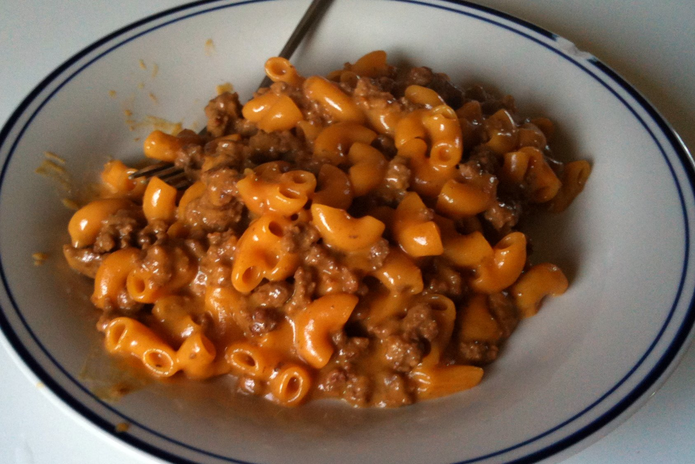

Note: Not a real image of this homemade recipe. I do not own tableware like that...
A guilty pleasure; Hamburger helper... I know that it carries a bit of stigma/a specific type of thought might pop into your mind, but you have to understand how good this stuff truely is. My adhd mind craves salt, savory bullshit, and this is literally the best solution for me! People who love hamburger helper, rise up and live our truth! Also this recipe is a homemade version that I found online and made a bit of my own to try and get the taste down to something really enjoyable! In my opinion, a very solid dish.
Ingredients
2 small onions, 1 big onion
1 clove of garlic
250g ground beef
250g shredded cheddar cheese, orange or white works
700ml of beef stock
200ml of milk
15ml Worcestershire sauce
Spritz of mustard
250g of any type of noodle, I like using spirali
Spice mix:
good pinches of salt, basically salt to taste
1 good pinch of pepper
2 heaping tsps of paprika
2 pinches of chyanne pepper
1 tsp chilli-powder
1 tsp garlic and onion powder
(Optional): If you have cajun mix, use that as well and leave out pepper and reduce paprika
Steps
Chop onion and garlic. Add oil into pan and brown the meat first. You can add a bit of the spice mix here, not all of it but a couple pinches.
Add onions and garlic after the meat has cooked a bit. Cook till onion becomes translucent.
Add stock, milk, Worcestershire sauce, mustard and spice mixture and stir. Bring to a boil and add the 250g of pasta and cook the pasta in the sauce.
Cook the pasta for the time noted on the bag, but in my experience, hover over the pan and make sure that there is enough water covering everything and check the pasta often.
Once the water has cooked off and the noodles are cooked, remove from heat and add cheese. Stir through and let sit covered with no heat for at least 5 min.